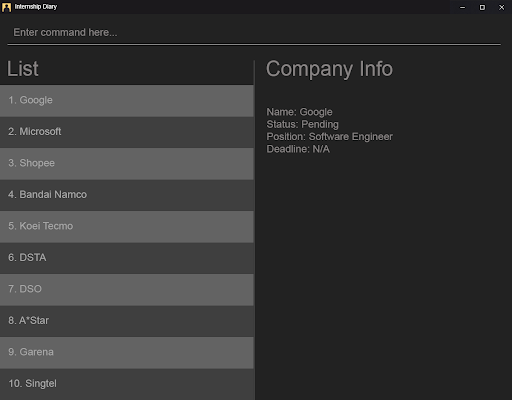

Online version can be found here:
https://ay1920s2-cs2103t-f10-2.github.io/main/UserGuide.html
By: CS2103T-F10-2 Since: Feb 2020 Licence: MIT
- 1. Introduction
- 2. Quick Start
- 3. Key Information
- 4. Commands
- 4.1. Viewing offline user guide:
help - 4.2. Viewing unarchived
internship applications:
list - 4.3. Viewing archived
internship applications:
archival - 4.4. Selecting an
internship application to display:
select - 4.5. Adding an internship
application:
add - 4.6. Deleting internship
application:
delete - 4.7. Archiving internship
application:
archive - 4.8. Unarchiving
internship application:
unarchive - 4.9. Editing an internship
application:
edit - 4.10. Locating internship
applications:
find - 4.11. Sorting internship
companies by field:
sort - 4.12.
Modifying an interview in an internship application:
interview - 4.13.
Getting applications due or have interviews in 7 days:
reminder - 4.14. Clearing all entries:
clear - 4.15. Retrieving statistics:
stats - 4.16. Exiting the program:
exit - 4.17. Saving the data
- 4.1. Viewing offline user guide:
- 5. FAQ
- 6. Command Summary
- 7. Glossary
1. Introduction
Internship Diary is a desktop application that assists university students in managing their internship applications.
With the Internship Diary, you can leave behind your troubling times trying to to organize, track, and review all your past and upcoming internship applications. The application is designed and optimized for users who can type quickly, and provides an elegant design which is easy on the eyes.
2. Quick Start
Here are the steps to get you started on using Internship Diary:
-
Ensure you have Java
11or above installed in your Computer. -
Copy the file to the folder you want to use as the home folder for your Internship Diary.
-
Double-click the file to start the app. The Graphical User Interface (GUI) should appear in a few seconds.
Figure 1. Graphical User Interface of Internship Diary -
Test the application by typing the command
helpin the command box and pressing Enter to execute it. This should open the help window. -
Refer to Section 4, “Commands” to find out what other commands you can use on Internship Diary.
3. Key Information
Here are some important information you should know.
3.1. Graphical user interface
The above image illustrates the major graphical components of Internship Diary to help you navigate our application.
3.2. Structure of internship application
| Field | Prefix | Can Be Empty? | Max Number of Values | Remarks |
|---|---|---|---|---|
|
Company |
c/ |
No |
1 |
No restrictions on input. |
|
Role |
r/ |
No |
1 |
No restrictions on input. |
|
Address |
a/ |
Yes |
1 |
No restrictions on input. |
|
Phone |
p/ |
Yes |
1 |
"+" at the start is optional. Must have between 4 and 15 digits if not empty. |
|
|
e/ |
Yes |
1 |
Email should be of format "LOCAL@DOMAIN". LOCAL consists of at least 1 character. DOMAIN starts and ends with alphanumeric characters, and consists of alphanumeric characters, periods or hyphens for the characters in between. E.g. example@example.com |
|
Application Date |
d/ |
Yes |
1 |
Must be a valid date of the
form |
|
Priority |
w/ |
No |
1 |
Must be an integer from 0 to 10 (inclusive). If left empty, default to 5. |
|
Status |
s/ |
No |
1 |
Possible values listed in Section 3.3, “Valid status”. The first letter of the Status can be used to input the respective Status values. |
|
Interviews |
Not applicable |
Yes |
No limits |
See below, Section 3.4, “Structure of interview” |
3.3. Valid status
The following are the valid statuses for internship application, listed in sort order:
1. |
|
An internship application that you are planning to apply for. |
2. |
|
An internship application that you have already applied for. |
3. |
|
An internship application that you have applied to, and have been invited to an interview. |
4. |
|
An internship application that you have received a job offer for. |
5. |
|
An internship application that you have been rejected for. |
6. |
|
An internship application that you have heard no reply from for a long time. |
3.4. Structure of interview
-
Interviewrepresents an interview that you have been given by the company you are applying to. It exists within anInternshipApplication -
Currently there are two types of
Interviewprovided by the Internship Diary:-
Online Interview — No address is needed.
-
Offline Interview — Address must be provided when interview is added or modified from online to offline.
-
-
You can specify what type of interview you want to add by using the
o/IS_ONLINEprefix. -
In order to facilitate your tracking of interviews, there are no restriction to what
InternshipApplicationyou can add your interview to.
Therefore, it is possible for you to add an interview to anInternshipApplicationwith any status.-
This is so that just in case you forgot to record an interview after you already got offered or rejected, you could still add it into the Internship Diary for your personal tracking.
-
In v2.0, we will create a prompt on whether you want to automatically change your
InternshipApplicationstatus to 'interview'.
-
| Field | Prefix | Can Be Empty? | Max Number of Values | Remarks |
|---|---|---|---|---|
|
isOnline |
o/ |
No |
1 |
Can only be
|
|
Interview Date |
d/ |
No |
1 |
Must be a valid date of the
form |
|
Interview Address |
a/ |
online: yes offline: compulsory |
1 |
No restrictions on input. |
3.5. Command format
-
Words in
UPPER_CASEare the parameters to be supplied by the user.
(e.g. inadd n/COMPANY_NAME,COMPANY_NAMEis a parameter which can be used asadd c/Google) -
Items in square brackets are optional.
(e.gc/COMPANY_NAME [w/PRIORITY]can be used asc/Google w/5or asc/Google) -
Items with
… after them can be used multiple times including zero times.
(e.g.delete INDEX, [INDEX],…can be used asdelete 1ordelete 1, 2, 3) -
Parameters can be entered in any order.
(e.g. if the command specifiess/STATUS r/ROLE,r/designer s/appliedis also acceptable) -
An input consisting of only spaces is considered empty.
3.6. Viewing command history
Use the up and down arrow keys while the command box is being focused
to scroll through your command history.
3.7. Other important information
3.7.1. Index of an internship application
-
We will use
INDEXto refer to a particular internship application.-
INDEXcan be found on the left side of an internship application card. -
INDEXwill start from 1 (inclusive). -
INDEXis not unique to a particular internship application — it will change as the list is updated. -
INDEXonly serves as a reference for you to choose the correct internship application.
-
-
For any command that uses
INDEX:-
INDEXmust be among those displayed in the current list.-
For example, if the current list displays
INDEX1 to 10,INDEX11 will not be considered valid.
-
-
3.7.2. Multiple fields
-
Commands that contain fields (see: Section 3.2, “Structure of internship application”) will be able to take in multiple entry of each field (except
sortwhich only allows one field). -
However, when multiple fields are inputted, eg.
c/Google c/Facebook, only the last field will be recognised by the application. In the example above, onlyc/Facebookwill be registered,c/Googlewill be ignored by the application.
3.7.3. Command availability
-
Commands will work on both main list and archival list.
-
The exceptions are:
Archive,Unarchive,Reminder
-
3.7.4. Colored internship applications
-
Some internship applications in the list may be colored green or red. This is what each color means:
-
Internship applications colored green indicates that there is an upcoming application deadline or interviews for that internship application.
-
Internship applications colored red indicates that the internship application’s status is
ghostedand you might want to take action to keep the list relevant.
-
4. Commands
4.1.
Viewing offline user guide: help
Format: help
4.2.
Viewing unarchived internship applications: list
Displays unarchived internship applications. This is known as your main list.
Format: list
4.3.
Viewing archived internship applications: archival
Displays archived internship applications. This is known as your archival list.
Format: archival
4.4.
Selecting an internship application to display: select
Selects an internship application to display on the right panel of the internship diary.
Only one internship application may be selected at any point in time.
| Alternatively, you may use your mouse to click on a specific internship application on the left panel of the internship diary. |
Format: select INDEX
Example(s):
-
select 1
4.5.
Adding an internship application: add
Adds an internship application to the current list.
Format: add c/COMPANY r/ROLE d/DATE s/STATUS [p/PHONE] [e/EMAIL] [a/ADDRESS]
[w/PRIORITY]
Refer to Section 3.2, “Structure of internship application” for details about the input constraints.
Examples:
-
add c/Microsoft r/software engineer d/01 01 2020 s/rejected -
add c/Google r/Software Engineer d/20 02 2020 s/applied p/91234567 e/google@google.com a/123 Orchard Road
4.6.
Deleting internship application: delete
Deletes internship application from the current list.
Formats:
-
delete INDEX -
delete INDEX, [INDEX],… -
delete s/STATUS [STATUS]…
Example(s):
-
list
delete 2
Deletes the 2nd internship application from the main list. -
list
delete 1, 2, 3
Deletes the 1st, 2nd, and 3rd internship applications from the main list. -
archival
delete s/applied
Deletes all the internship application(s) with theappliedstatus from the archival list. -
archival
delete s/applied rejected
Deletes all the internship application(s) with theappliedorrejectedstatus from the archival list.
4.7.
Archiving internship application: archive
Moves internship application from the main list to the archival
list.
Formats:
-
archive INDEX -
archive INDEX, [INDEX],… -
archive s/STATUS [STATUS]…
Example(s):
-
list
archive 2
Archives the 2nd internship application in the main list. -
list
archive 1, 2, 3
Archives the 1st, 2nd, and 3rd internship application in the main list. -
list
archive s/applied
Archives all the internship application(s) with theappliedstatus in the main list. -
list
archive s/applied rejected
Archives all the internship application(s) with theappliedorrejectedstatus in the main list.
4.8.
Unarchiving internship application: unarchive
Moves internship application from the archival list to the main
list.
Formats:
-
unarchive INDEX -
unarchive INDEX, [INDEX],… -
unarchive s/STATUS [STATUS]…
Example(s):
-
archival
unarchive 2
Unarchives the 2nd internship application in the archival list. -
archival
unarchive 1, 2, 3
Unarchives the 1st, 2nd, and 3rd internship application in the archival list. -
archival
unarchive s/applied
Unarchives all the internship application(s) with theappliedstatus in the archival list. -
archival
unarchive s/applied rejected
Unarchives all the internship application(s) with theappliedorrejectedstatus in the archival list.
4.9.
Editing an internship application: edit
Edits an internship application in the internship diary.
Format: edit INDEX [c/COMPANY] [r/ROLE] [d/DATE] [s/STATUS] [p/PHONE] [e/EMAIL]
[a/ADDRESS] [w/PRIORITY]
Examples:
-
edit 1 s/applied r/Product Management
Edits the status and role of the internship application to beappliedandProduct Managementrespectively.
4.10.
Locating internship applications: find
Finds all internship application(s) with the specified fields containing any of the given keywords.
| The find parameters will appear at the bottom left of the internship diary |
Format: find [KEYWORDS] [c/COMPANY] [r/ROLE] [a/ADDRESS] [p/PHONE] [e/EMAIL] [d/DATE]
[w/PRIORITY] [s/STATUS]
Example(s):
-
find Google
Lists internship application(s) with companyGoogleOR with emailalice@google.com.
-
find c/Google s/applied
Lists internship application(s) with companyGoogleAND statusapplied.
4.11.
Sorting internship companies by field: sort
Sort displayed internship companies based on a given FIELD.
| The sort parameters will appear at the bottom left of the internship diary |
Type reverse before FIELD to sort in the reverse order.
Format: sort [reverse] FIELD.
Available values for FIELD:
c/: Sorts by company name (Dictionary Order).
d/: Sorts by application date (Chronological Order).
r/: Sorts by role (Dictionary Order).
s/: Sorts by status (Refer to Section 3.3, “Valid
status”).
w/: Sorts by priority level (Ascending Order).
Examples:
-
Sort c/
Returns a list of currently displayed companies sorted by company name.
4.12.
Modifying an interview in an internship application: interview
Add, list, edit or delete interviews within an internship application
|
An interview must contain a date and a boolean (true or false) that represents whether
an interview is conducted online or not. If the interview is not conducted online, an additional address field must be provided. See Section 3.4, “Structure of interview” for more information. |
Format:
-
Overview
interview INTERNSHIP_INDEX COMMAND_WORD [INTERVIEW_INDEX] [a/ADDRESS] [d/DATE] [o/IS_ONLINE]
-
Specific format of each
COMMAND_WORD:-
Add interview
interview INTERNSHIP_INDEX add d/DATE o/IS_ONLINE [a/ADDRESS]-
Address field
a/ADDRESSis listed as optional here as online interview do not require an address but offline interview does.
-
-
List interview
interview INTERNSHIP_INDEX list -
Edit interview
interview INTERNSHIP_INDEX edit INTERVIEW_INDEX [a/ADDRESS] [d/DATE] [o/IS_ONLINE]-
If you are editing an online interview into an offline interview, Address field
a/ADDRESSis a requirement.
-
-
Delete interview
interview INTERNSHIP_INDEX delete INTERVIEW_INDEX
-
Examples:
-
list
interview 2 list
Lists all interviews in the 2nd internship application in the list
-
interview 2 add o/false d/05 02 2020 a/Raffles City #02-22
Adds an interview to the 2nd internship application in the list.
-
interview 2 list
interview 2 edit 1 d/05 05 2020
Edits the date of the 1st interview in the 2nd internship application in the list to05 05 2020.
-
interview 2 list
interview 2 delete 3
Deletes the 3rd interview in the 2nd internship application in the list.
4.13.
Getting applications due or have interviews in 7 days: reminder
Displays all internship application(s) that:
-
have status
wishlistand need to be submitted in 7 days -
have status
interviewand interviews scheduled in 7 days
The applications will be displayed in order of earliest application date or scheduled interview date followed by those with later dates.
This command helps to remind you of applications which you might want to focus on first, so that you do not miss submission deadlines or any upcoming interviews.
Format: reminder
reminder can be used anytime, but it does not work on archived
applications.
|
Any command after reminder will be ignored.e.g. reminder dummy variable be just be treated as reminder
|
4.14.
Clearing all entries: clear
Clears all entries from the Internship Diary.
Format: clear
4.15.
Retrieving statistics: stats
Displays the statistics about your internship application(s) on the current list.
It will open a separate window that contains a bar chart and a pie chart.
The statistics will dynamically update as you modify the current list (e.g. switching between main and archival list).
Format: stats
| Alternatively, you may use your mouse to click on "Statistics" and then "View Statistics" to bring up the statistics window. |
4.16.
Exiting the program: exit
Exits the program.
Format: exit
4.17. Saving the data
Internship Diary is saved in the hard disk automatically after any command that changes the data.
There is no need to save manually.
5. FAQ
Q: How do I transfer my data to another Computer?
A: Install the app in the other computer and overwrite the empty data file it
creates with the file that contains the data of your previous Internship Diary folder.
Q: What happens if I directly change the data stored in the hard drive?
A: The application cannot guarantee the integrity of your data if you tamper with
the file in the storage.
6. Command Summary
-
Help :
help -
List :
list -
Archival :
archival -
Select :
select INDEX -
Add
add c/COMPANY r/ROLE d/DATE s/STATUS [p/PHONE] [e/EMAIL] [a/ADDRESS] [w/PRIORITY]
e.g.add c/Google r/Software engineer s/wishlist d/10 10 2010 -
Delete :
delete INDEX
e.g.delete 1 -
Archive :
archive INDEX
e.g.archive 1 -
Unarchive :
unarchive INDEX
e.g.unarchive 1 -
Edit :
edit INDEX [c/COMPANY] [r/ROLE] [d/DATE] [s/STATUS] [p/PHONE] [e/EMAIL] [a/ADDRESS] [w/PRIORITY]
e.g.edit 2 c/Google s/applied -
Find :
find [KEYWORDS] [c/COMPANY] [r/ROLE] [a/ADDRESS] [p/PHONE] [e/EMAIL] [d/DATE] [w/PRIORITY] [s/STATUS]
e.g.find c/google r/engineer -
Sort :
sort FIELD
e.g.sort c/ -
Interview :
-
Add:
interview INTERNSHIP_INDEX add d/DATE o/IS_ONLINE [a/ADDRESS]
e.g.interview 1 add d/20 12 2020 o/true -
List:
interview INTERNSHIP_INDEX list
e.g.interview 1 list -
Edit:
interview INTERNSHIP_INDEX edit INTERVIEW_INDEX [a/ADDRESS] [d/DATE] [o/IS_ONLINE]
e.g.interview 1 edit 1 d/10 10 2020 -
Delete:
interview INTERNSHIP_INDEX delete INTERVIEW_INDEX
e.g.interview 1 delete 1
-
-
Reminder :
reminder -
Clear :
clear -
Statistics :
stats -
Exit :
exit
7. Glossary
-
Alphanumerical
-
Either a letter of the English language (a-z, A-Z) or a Roman numeral (0-9).
-
-
Chronological order
-
The order of events in which events which occurred earlier would be placed before events which occurred later.
-
-
Dictionary order:
-
The order which words would be ordered in a dictionary.
-